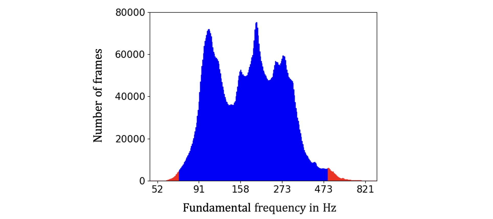
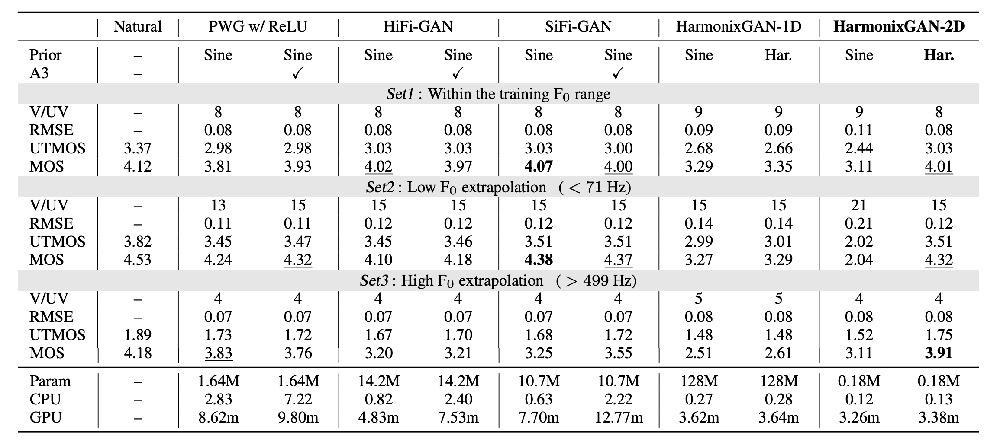
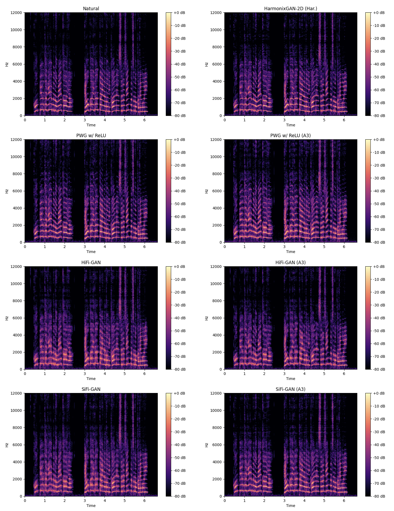

HarmonixGAN: Alias-Free Neural Waveform Synthesis Based on Complex Spectrogram Estimation with 2D
Convolution and Harmonic Prior
Anonymous submission to Interspeech 2024
Audio samples
Model
jvs002_parallel100_VOICEACTRESS100_048
jvs033_parallel100_VOICEACTRESS100_051
jvs067_parallel100_VOICEACTRESS100_084
jvs069_whisper10_VOICEACTRESS100_001
jvs081_whisper10_BASIC5000_1695
Natural
PWG w/ ReLU
PWG w/ ReLU (A3)
HiFi-GAN
HiFi-GAN (A3)
SiFi-GAN
SiFi-GAN (A3)
HarmonixGAN-1D (Sine)
HarmonixGAN-1D (Har.)
HarmonixGAN-2D (Sine)
HarmonixGAN-2D (Har.)
Suplemental figures

Histogram displaying the distribution of F0 values within the Japanese versatile speech (JVS)
corpus. The horizontal axis represents F0 values in logarithmic scale hertz, and the vertical axis
represents the total number of frames across all utterances. Utterances falling within the red-tailed F0
value ranges were omitted from the training dataset, which thus consists exclusively of values within the
central blue range.

Experimental results across three F0 range divisions. The rows labeled A3, Prior,
Param, CPU, and GPU indicate the use of anti-aliased activation functions, the type of input periodic
signal, the number of learnable parameters, and real-time factors (RTF) on a single CPU with four threads
(AMD EPYC 7542) or a single GPU (GeForce RTX 3090), respectively. RTFs were averaged over 200 utterances.
The confidence intervals (CIs) of the mean opinion score (MOS) are omitted, but all were less than 0.052.
The highest MOS scores are highlighted in bold, and scores with CIs overlapping those of the highest
scores are underlined. Regarding the overall decrease in the MOS for Set1 and Set3, we observed that
whispered and falsetto voices, which are absent in Set2, tend to receive lower scores compared to normal
speech.

Comparison of spectrograms between natural speech and generated speech with high fundamental
frequency extrapolation. HiFi-GAN and SiFi-GAN exhibit blurred harmonics due to the effects of aliasing,
but
some improvement is observed with anti-aliased activation (A3) functions. PWG w/ ReLU shows almost no
harmonic distortion as it does not employ upsampling layers. The proposed method, HarmonixGAN, performs
well
even during extrapolation due to its aliasing-free design.
References
R. Yamamoto, E. Song, and J.-M. Kim, “Parallel Wavegan: A Fast
Waveform Generation Model Based on Generative Adversarial
Networks with Multi-Resolution Spectrogram,” in Proc. ICASSP,
2020, pp. 6199-6203.
J. Kong, J. Kim, and J. Bae, “HiFi-GAN: Generative Adversarial
Networks for Efficient and High Fidelity Speech Synthesis,” in
Proc. NeurIPS, vol. 33, 2020, pp. 17 022-17 033.
R. Yoneyama, Y.-C. Wu, and T. Toda, “Source-Filter HiFi-GAN: Fast and Pitch Controllable
High-Fidelity Neural Vocoder,” in Proc. ICASSP, 2023, pp. 1-5.
S. gil Lee, W. Ping, B. Ginsburg, B. Catanzaro, S. Yoon, “BigVGAN: A Universal
Neural Vocoder with Large-Scale Training,” in Proc. ICLR, 2023.
T. Saeki, D. Xin, W. Nakata, T. Koriyama, S. Takamichi, H. Saruwatari, “UTMOS: UTokyo-SaruLab
System for VoiceMOS Challenge 2022,” in Proc. Interspeech, 2022, pp. 4521-4525.